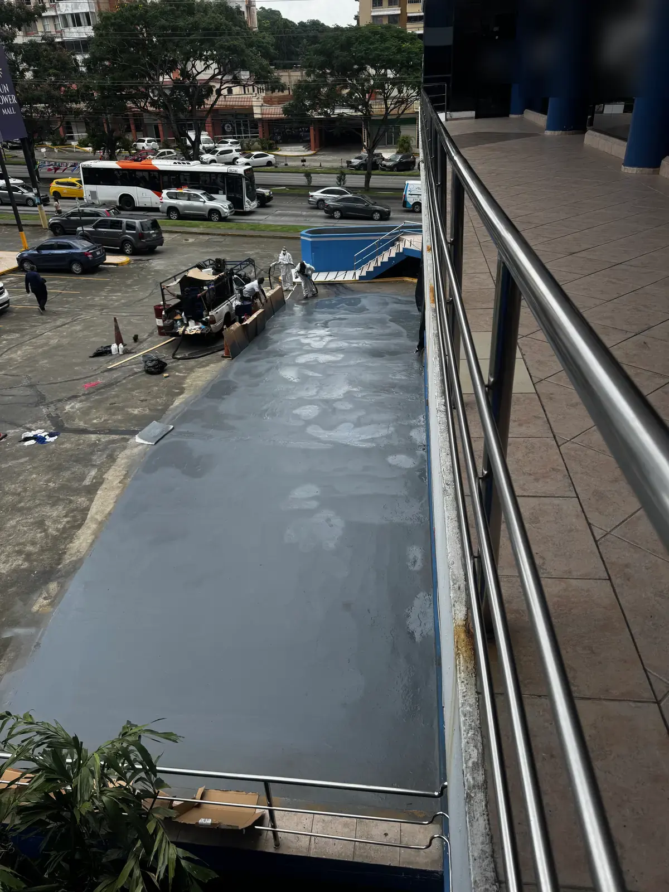
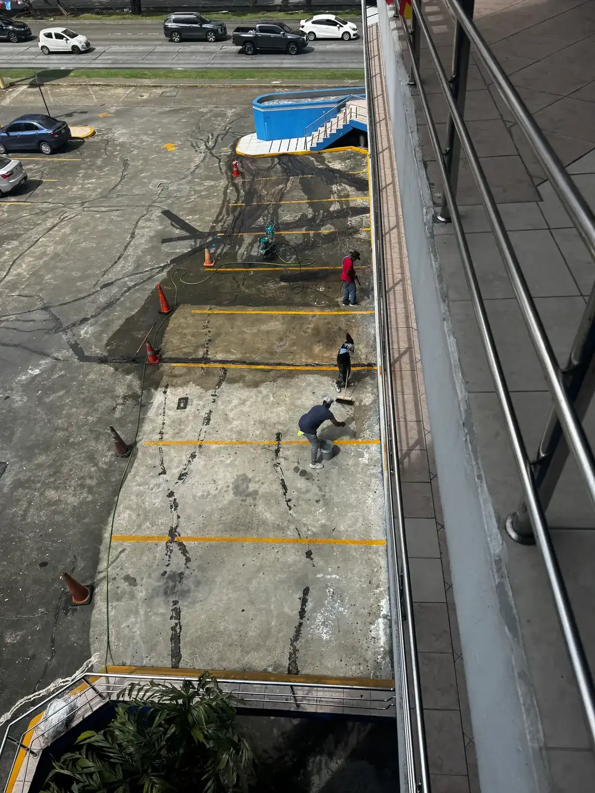
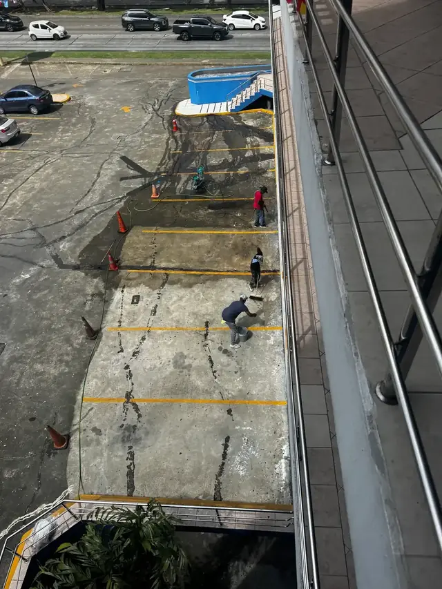
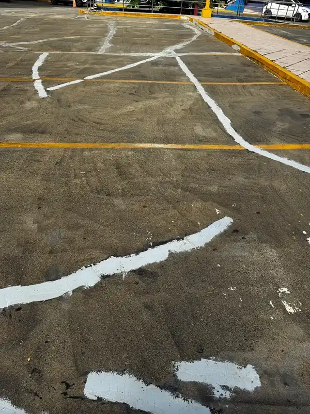
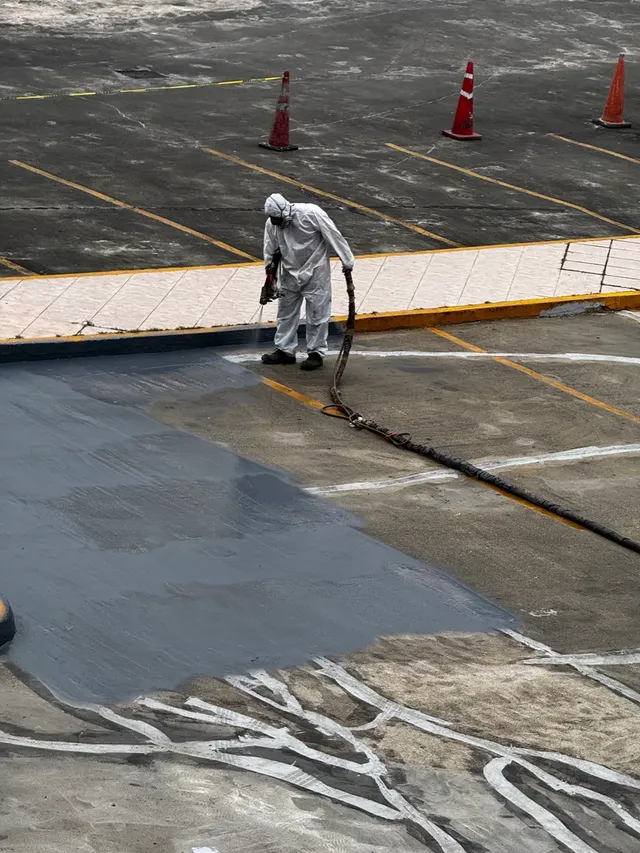
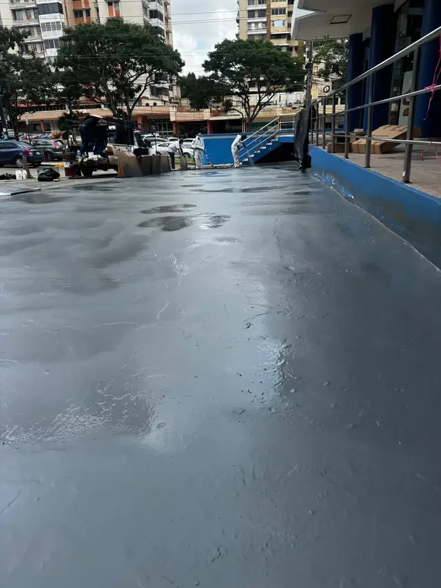

Impermeabilización · Panamá
Membrana continua.
Cero juntas.
Cero filtraciones.
Techos y losas sellados en una sola capa. Diagnóstico sin costo.
El agua no se detiene sola.
- Manchas y goterasEmpiezan pequeñas y crecen con cada lluvia.
- Acero que se oxidaEl agua llega al refuerzo de la losa y lo daña.
- Humedad adentroPintura que se levanta y olor a encierro.
Así queda una losa.


AntesDespuésVéanos en acción




Cada superficie, su sistema.
Le recomendamos el que corresponde en el diagnóstico sin costo, aunque no sea la poliurea.
Tres pasos. Ningún precio de catálogo.
El costo depende de la superficie, del acceso y del área real. Por eso cada proyecto se cotiza por separado, nunca por tabla de precios.
Usted nos escribe o nos deja sus datos
Comparta el tipo de superficie, el área aproximada y el problema que enfrenta, por WhatsApp o en el formulario. Sin costo.
Evaluamos su caso
Con esa información —o una visita de nuestro equipo si el proyecto lo requiere— calculamos el precio real según la superficie y el acceso.
Usted recibe su cotización
Precio por proyecto, garantía por escrito y fecha de aplicación, todo por escrito.

Cuéntenos de su proyecto.
Envíe su ubicación, el área aproximada y una foto si la tiene a la mano. Le decimos qué sistema corresponde y qué no.